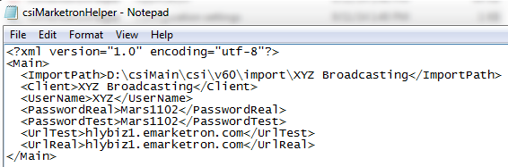
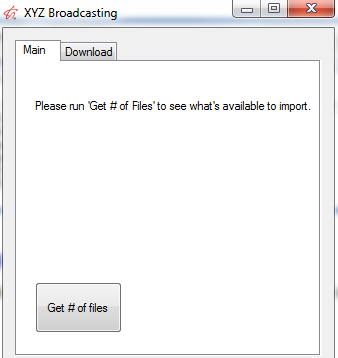
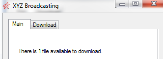
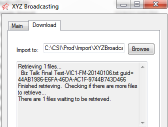

Marketron Helper Utility
Marketron allows no more than 1,000 files to be imported in a single session. The CSI Marketron Helper Utility will assist those clients with large numbers of import files that encounter this limitation.
Installation and Setup
The CsiMarketronHelper folder contains two files, csiMarketronHelper.ini and the csiMarketronHelper exe (application).
The folder can be placed anywhere on the client’s system.
INI File
Use an editor program like notepad, to edit the CSIMarektronHelper.INI file. Contact support@counterpoint.net for assistance.

When filling in the INI, the User Name and Password must be unique. Contact support@counterpoint.net for this information.
Running the Application
To run the utility, double click on the CSIMarktronHelper.exe within the folder.

Main Screen
From the Main screen, you can click “Get # of Files” to see the total amount of files. Clicking this does not import any files, it simply gives you a total number of files waiting to be imported.

Download Screen
The Download screen is where the actual download will occur.
Upon the first download, you will need to browse to the folder in which the files will be downloaded and saved. This path can be anywhere on the client’s system, but generally is the folder used to import Marketron files, such as CSI\Prod\Import\XYZBroadcasting.
Once defined, the utility will remember the path and make it the default.
Downloading Files
Click Download to begin processing. When complete, the results will display in the Download box.
Since Marketron limits the number of files to be imported to 1,000, after the download is complete, the utility checks for, and indicates the amount of, any additional files that need to be downloaded. If any exist, click Download to retrieve them.

Import File
The import txt file will be stored in the folder defined in the Download screen, and will is ready to be imported into the Affiliate system.